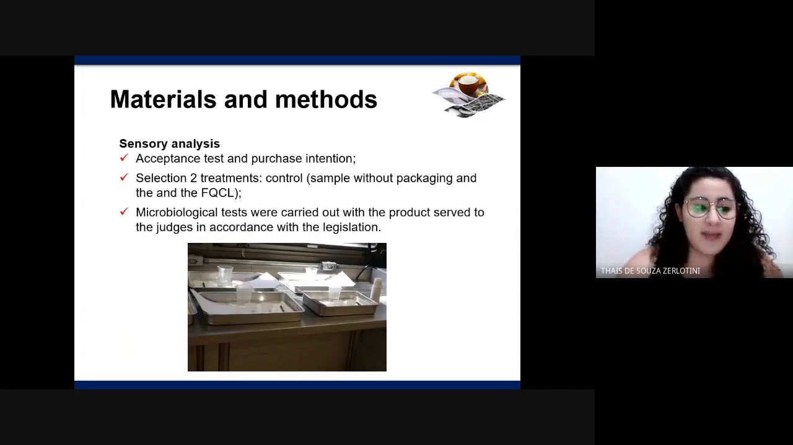
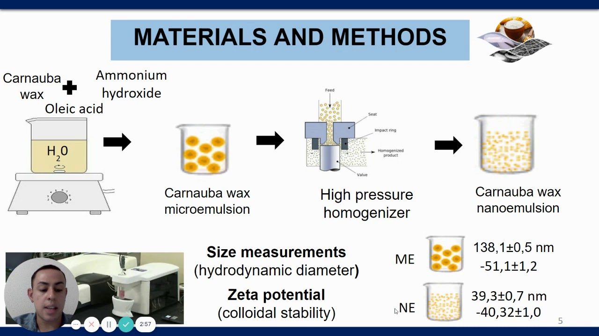

FORMULATION OF CHITOSAN/GELATIN/PEQUI OIL EMULSIONS: THERMAL, RHEOLOGICAL AND ANTIMICROBIAL PROPERTIES
HYDROPHILICITY OF STARCH/CHITOSAN FILMS ADDED WITH UREA FOR USE AS NITROGEN FERTILIZER
PHYSICOCHEMICAL PROPERTIES OF MODIFIED STARCHES CONTAINING ANTHOCYANINS FROM JAMBOLAN (Syzygium cumini) FRUIT
 EXTRACTION AND CHARACTERIZATION OF MANGARITO STARCH
EXTRACTION AND CHARACTERIZATION OF MANGARITO STARCH INFLUENCE OF BIOPOLYMERS CONCENTRATION IN THE STABILIZATION OF MUSTARD OIL-BASED EMULSIONS
INFLUENCE OF BIOPOLYMERS CONCENTRATION IN THE STABILIZATION OF MUSTARD OIL-BASED EMULSIONSSHELF LIFE OF WHOLE WHEAT BREAD WITH ACTIVE CHITOSAN FILMS APPLICATION
 Oxidative stability of fresh beef packed with chitosan films incorporated with cashew bark
Oxidative stability of fresh beef packed with chitosan films incorporated with cashew barkANTIOXIDANT ACTIVE PACKAGING MATERIAL BASED ON CHITOSAN AND LEMONGRASS ESSENTIAL OIL
The use of acetate cellulose, as biodegradable polymer matrix, for the intelligent packaging production
Activated carbon from coffee residues by a combination of carbonization and ZnCl2 chemical activation processes
THE USE OF CELLULOSE APPLIED TO THE MANUFACTURE OF BIODEGRADABLE SMART PACKAGING: A PROSPECTIVE STUDY
 OPTICAL PROPERTIES OF CHITOSAN FILMS CONTAINING ANTHOCYANINS STABILIZED WITH A SYNTHETIC LAYERED SILICATE
OPTICAL PROPERTIES OF CHITOSAN FILMS CONTAINING ANTHOCYANINS STABILIZED WITH A SYNTHETIC LAYERED SILICATEDEVELOPMENT OF THE FILM-FORMING DISPERSION CONTAINING CMC, ARABIC GUM AND FOENICULUM VULGARE ESSENTIAL OIL FOR EDIBLE FILMS
HIGH STRENGTH XYLAN/CHITOSAN BIOBASED FILMS PREPARED IN THE PRESENCE OF ETHANOL
EVALUATION OF XYLAN/POLYETHYLENIMINE FILMS WITH DIFFERENT MASS RATIOS
BIOPOLYMER BASED ON THE PUREE OF MESOCARP OF MELON (Cucumis melo L.)
BIOPOLIMERIC FILMS OF CASSAVA RESIDUE INCORPORATED WITH WICKERHAMOMYCES ANOMALUS: ANTIMICROBIAL POTENTIAL
KINETIC AND ADSORPTION ISOTHERM STUDY APPLIED TO NANOCOMPOSITE HYDROGELS HERBICIDE PARAQUAT SYSTEMS
INFLUENCE OF CARBOXIMETHYLCELLULOSE HYDROGELS ON THE MOISTURE RETENTION, POROSITY AND SOIL DENSITY PROPERTIES
AN INCREMENTAL ISOCONVERSIONAL METHOD APPLIED TO KINETIC ANALYSIS OF PUREE FILMS FROM ONION BULB (Allium cepa L.).
SUSTAINABLE USE OF CANADIAN SWEET POTATO STARCH IN THE ELABORATION OF BIODEGRADABLE FILMS
MECHANICAL PROPERTIES OF CASSAVA STARCH FILMS INCORPORATED WITH NANOFIBRILLATED CELLULOSE FROM YACON PLANT (Smallanthus sonchifolius) STEM
CARNAUBA WAX MICRO- OR NANOEMULSIONS MODIFY THE WATER BARRIER PROPERTIES AND MICROSTRUCTURE OF ARROWROOT STARCH FILMS
INFLUENCE OF SONICATION TIME AND TANNIC ACID ON SOYBEAN PROTEIN ISOLATE MICROGEL PROPERTIES
Characterization of edible films of mangoes cv. Palmer via continuous casting
EFFECT OF OXIDATION REACTION TIME ON WATER RETENTION PROPERTIES (WRV) OF BACTERIAL CELLULOSE NANOFIBERS
EVALUATION OF THE INFLUENCE OF THE CONCENTRATION OF CHITOSAN AND ANTIOXIDANT ON THE PROPERTIES OF BIOACTIVE FILMS: EXPERIMENTAL DESIGN DCCR
CARBOXIMETHYL SWEET POTATO STARCH (Ipomoea batatas) FOR FOOD USE
THERMAL DEGRADATION AND PIROLYSIS KINETICS ANALYSIS OF TAMARILLO AND PEACH PALM FRUIT PEELS
THERMAL KINETICS STUDY OF CALABASH FRUIT SHELL AND DRAGON FRUIT PEEL AND THEIR VIABILITY AS AN ENERGY RESOURCE
DEVELOPMENT OF THE FILM-FORMING DISPERSION CONTAINING CMC, ARABIC GUM AND FOENICULUM VULGARE ESSENTIAL OIL FOR EDIBLE FILMS
WATER VAPOR PERMEABILITY OF COMPOSITE FILMS BASED ON HYDROXYPROPYL METHYLCELLULOSE REINFORCED WITH BACTERIAL CELLULOSE NANOCRYSTALS